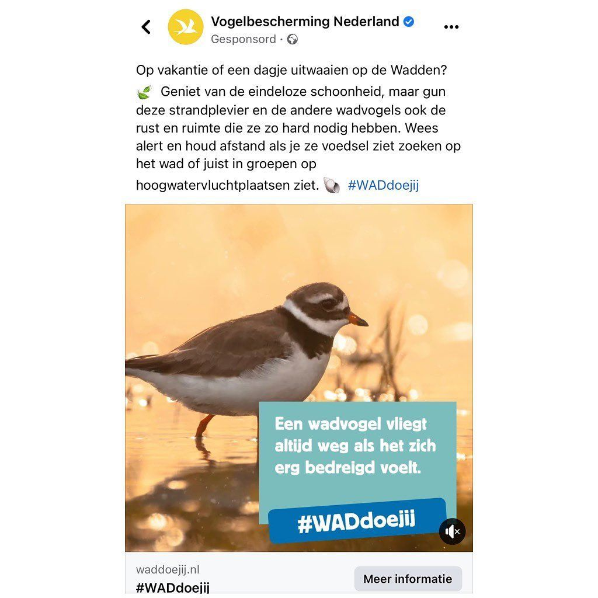

Bontbekplevier, geen strandplevier
6 mei 2022 · Vogelbescherming Nederland
- Op de foto
- Bontbekplevier
- Het ging over
- Strandplevier

Leuk om @vogelbeschermingnederland weer eens op deze pagina te zien! Dit is natuurlijk geen Strandplevier maar een Bontbekplevier, die uiteraard óók beschermd moeten worden.